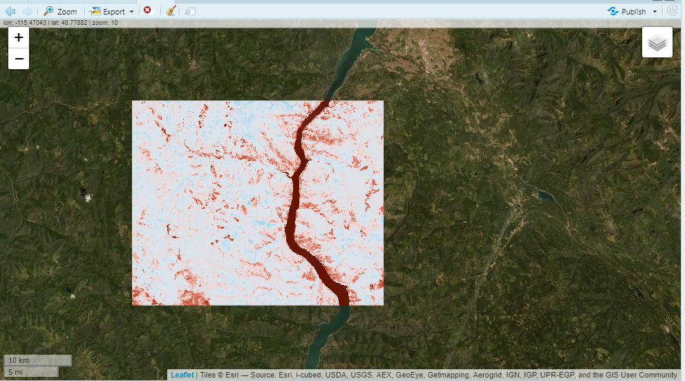
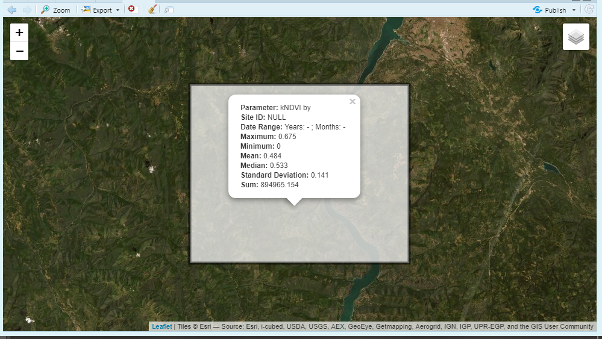
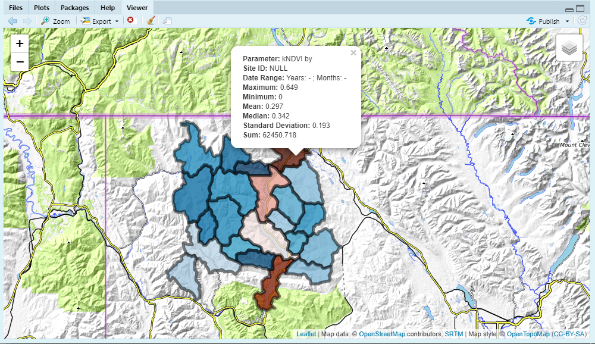
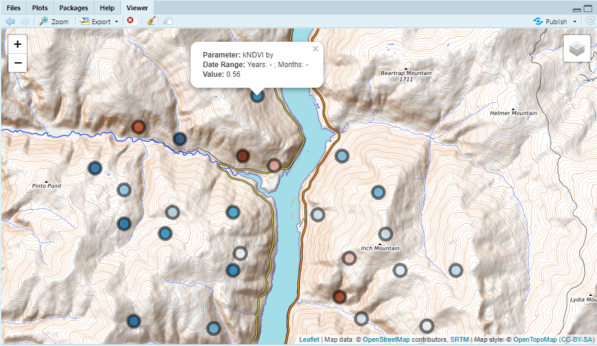

Sometimes a user may want to reduce a image to a region (e.g. zonal statistics or point extraction) to gather some aggregated information. Earth Engine and rgee provide means to do this through the reduceRegions() function. In addition, rgee provides a function ee_as_sf() which let’s us easily get that information in the R session! However, there are a few steps that are needed before you get to this point; 1.) a reduced image, 2.) a reducer stat, 3). a feature to reduce on (geometry). This article will go through these steps using the rr() function.
First we’ll need to get an image that we’ll want to reduce on. We’ll use the get_landsat() function, which will let us get an imageCollection as well as a final image. We’ll need to define a geometry aka area of interest (aoi) so that we can clip the imageCollection. To do this we’ll use the {mapedit}.
library(mapedit)
aoi <- drawFeatures()From here we can start with the get_landsat() function and get an image. Let’s use it with the {eemont} python package as well. The {eemont} is a really nice comprehensive python package that integrates a myriad of current, intuitive and user friendly earth engine processes.
library(exploreRGEE)
library(rgee)
ee_Initialize()
library(reticulate)
#py_install('eemont')
eemont <- import('eemont')
get_ld8 <- get_landsat(aoi = aoi,
method = 'ld8',
startDate = '2018-01-01',
endDate = '2021-12-31',
stat = 'median',
cloud_mask = FALSE,
c.low = 6,
c.high = 10)
mont_ld8 <- get_ld8$imageCol$
maskClouds()$
scale()$
spectralIndices('kNDVI')$
median()
# to visualize provide an area of interest to 'user_shape'
mont_ld8 %>% viz(band = 'kNDVI', min = 0, max = 1, user_shape = aoi)
Now that we have a image we can start to reduce that image by several parameters in earth engine: ‘max’, ‘mean’, ‘median’, ‘min’, ‘stdDev’, ‘sum’. The rr() function will reduce the region by these stats and return an sf object (aoi) with reduced regions.
We can also add the argument leaflet = TRUE to get a interactive map of the reduced region.

This is nice but what if we wanted to use different areas of interest? Well, you have a few options; bring in a new spatial feature and start over or use an earth engine feature collection within the aoi. Below we’ll use the HUC12 feature collection in earth engine within our aoi.
rr_knvi <- mont_ld8 %>% rr(scale = 30,
geeFC = 'USGS/WBD/2017/HUC12',
band = 'kNDVI',
user_shape = aoi,
leaflet = TRUE)
We can also just use point geometries.
